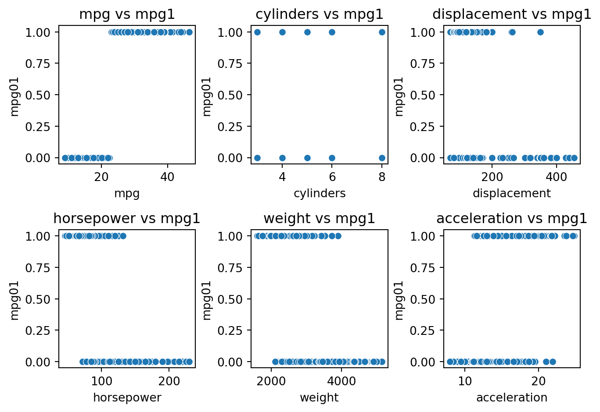
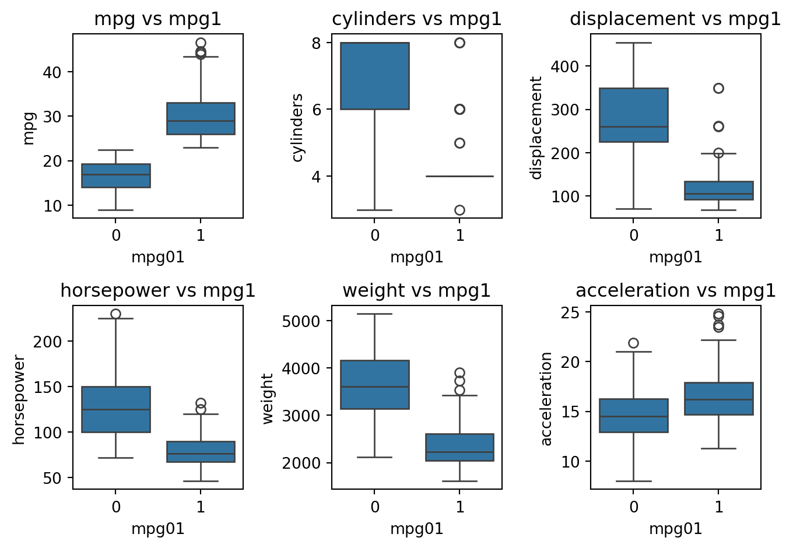

import numpy as np
import pandas as pd
import matplotlib.pyplot as plt
import seaborn as sns
import statsmodels.api as sm
import patsy
from sklearn.model_selection import train_test_split
from sklearn.linear_model import LogisticRegression
from sklearn.metrics import accuracy_score
from sklearn.naive_bayes import GaussianNB
from sklearn.discriminant_analysis import LinearDiscriminantAnalysis, QuadraticDiscriminantAnalysis
import math
df_default = pd.read_csv("C:/Users/madig/Documents/Github/Year 2024-2025/ML_HW_3/Default.csv")
df_auto = pd.read_csv("C:/Users/madig/Documents/Github/Year 2024-2025/ML_HW_3/Auto.csv")HW 3
Section 1
If the true decision boundary is a straight line, LDA will outperform QDA on both the training and test sets. While QDA is more flexible and can capture more complex patterns, this added flexibility is not needed and may lead to overfitting on the training set. On the test set, LDA performs better because it correctly assumes a straight-line boundary, whereas QDA might overcomplicate the model, reducing its prediction accuracy. Since LDA aligns more closely with the true pattern, it generally provides better results in this scenario.
If the true decision boundary is not a straight line, QDA will outperform LDA. On the training set, QDA’s flexibility allows it to better capture complex patterns, resulting in a lower error compared to LDA. On the test set, QDA is still likely to perform better since it can model the true non-linear relationship, while LDA, assuming a straight-line boundary, will make more errors. However, if the data is limited, QDA’s added flexibility might lead to overfitting, potentially reducing its performance on the test set.
As the sample size grows, QDA’s test accuracy is expected to surpass LDA’s. This is because QDA is more flexible and better at modeling complex decision boundaries, but it needs more data to accurately estimate its additional parameters. With a small sample size, QDA may overfit and perform worse on the test set. However, as the sample size increases, QDA can better capture the true decision boundary, reducing overfitting and improving its accuracy relative to LDA.
False. If the true decision boundary is linear, LDA typically results in a lower test error than QDA. While QDA can model a linear boundary, it estimates more parameters, which increases the risk of overfitting, particularly with limited data. LDA, by making assumptions that align with the true boundary, generally provides better generalization and lower test error. The added flexibility of QDA is unnecessary in this case and can introduce more variance, making it less reliable for test predictions.
Section 2:
beta_0 = -6
beta_1 = 0.05
beta_2 = 1
X1 = 40
X2 = 3.5
eta = beta_0 + beta_1 * X1 + beta_2 * X2
p = 1 / (1 + math.exp(-eta))
print(f"Predicted probability: {p:.4f}")Predicted probability: 0.3775There is a 37.75% probability that the student will receive an A in the statistics class.
beta_0 = -6
beta_1 = 0.05
beta_2 = 1
X2 = 3.5
X1 = (-beta_0 - beta_2 * X2) / beta_1
print(f"Required hours of study: {X1:.2f}")Required hours of study: 50.00Section 3
mu_yes = 10
mu_no = 0
sigma = 6
P_yes = 0.8
P_no = 0.2
X = 4
def normal_pdf(X, mu, sigma):
return (1 / (math.sqrt(2 * math.pi * sigma**2))) * math.exp(-(X - mu)**2 / (2 * sigma**2))
likelihood_yes = normal_pdf(X, mu_yes, sigma)
likelihood_no = normal_pdf(X, mu_no, sigma)
P_X = (likelihood_yes * P_yes) + (likelihood_no * P_no)
P_yes_given_X = (likelihood_yes * P_yes) / P_X
print(f"Predicted probability of issuing a dividend given X = 4: {P_yes_given_X:.4f}")Predicted probability of issuing a dividend given X = 4: 0.7519There’s approximately a 75.19% chance that a company will issue a dividend given that its profit last year was 4%.
Section 4
median_mpg = df_auto['mpg'].median()
df_auto['mpg01'] = (df_auto['mpg'] > median_mpg).astype(int)
print(df_auto[['mpg', 'mpg01']].head()) mpg mpg01
0 18.0 0
1 15.0 0
2 18.0 0
3 16.0 0
4 17.0 0Scatterplots
continuous_features = ['mpg', 'cylinders', 'displacement', 'horsepower', 'weight', 'acceleration']
plt.figure(figsize=(7, 5))
for i, feature in enumerate(continuous_features, 1):
plt.subplot(2, 3, i)
sns.scatterplot(x=df_auto[feature], y=df_auto['mpg01'])
plt.title(f'{feature} vs mpg1')
plt.tight_layout()
plt.show()
Box Plot
plt.figure(figsize=(7, 5))
for i, feature in enumerate(continuous_features, 1):
plt.subplot(2, 3, i)
sns.boxplot(x=df_auto['mpg01'], y=df_auto[feature])
plt.title(f'{feature} vs mpg1')
plt.tight_layout()
plt.show()
The plots show that low MPG cars (mpg01 = 0) tend to have more cylinders, while high MPG cars mostly have 4 cylinders. Low MPG cars also have higher displacement and horsepower, while high MPG cars have lower values for both. Heavier cars generally have lower MPG, and lighter cars have higher MPG. Acceleration shows less separation and is a weaker predictor. The most useful features for predicting mpg01 are horsepower, weight, displacement, and cylinders.
train_df, test_df = train_test_split(df_auto, test_size=0.5, random_state=22)
print(f"Training set size: {len(train_df)}")
print(f"Test set size: {len(test_df)}")Training set size: 196
Test set size: 196predictors = ['horsepower', 'weight', 'displacement', 'cylinders']
lda = LinearDiscriminantAnalysis()
lda.fit(train_df[predictors], train_df['mpg01'])
predictions = lda.predict(test_df[predictors])
accuracy = accuracy_score(test_df['mpg01'], predictions)
test_error = 1 - accuracy
print(f"Test Accuracy: {accuracy:.4f}")
print(f"Test Error: {test_error:.4f}")Test Accuracy: 0.8929
Test Error: 0.1071The LDA model achieved a test accuracy of 89.29%, meaning it correctly predicts high or low MPG about 89% of the time. The test error is 10.71%, representing the proportion of incorrect predictions, indicating that the chosen predictors work well for LDA.
predictors = ['horsepower', 'weight', 'displacement', 'cylinders']
qda = QuadraticDiscriminantAnalysis()
qda.fit(train_df[predictors], train_df['mpg01'])
qda_predictions = qda.predict(test_df[predictors])
qda_accuracy = accuracy_score(test_df['mpg01'], qda_predictions)
qda_test_error = 1 - qda_accuracy
print(f"Test Accuracy: {qda_accuracy:.4f}")
print(f"Test Error: {qda_test_error:.4f}")Test Accuracy: 0.8929
Test Error: 0.1071This is the same as the previous question.
predictors = ['horsepower', 'weight', 'displacement', 'cylinders']
log_reg = LogisticRegression(max_iter=1000)
log_reg.fit(train_df[predictors], train_df['mpg01'])
log_reg_predictions = log_reg.predict(test_df[predictors])
log_reg_accuracy = accuracy_score(test_df['mpg01'], log_reg_predictions)
log_reg_test_error = 1 - log_reg_accuracy
print(f"Logistic Regression Test Accuracy: {log_reg_accuracy:.4f}")
print(f"Logistic Regression Test Error: {log_reg_test_error:.4f}")Logistic Regression Test Accuracy: 0.9133
Logistic Regression Test Error: 0.0867The Logistic Regression model achieved a test accuracy of 91.33%, correctly predicting high or low mpg 91% of the time. With a test error of 8.67%, it shows a lower proportion of incorrect predictions, indicating the predictors are more effective than in previous models.
nb = GaussianNB()
nb.fit(train_df[predictors], train_df['mpg01'])
nb_predictions = nb.predict(test_df[predictors])
nb_accuracy = accuracy_score(test_df['mpg01'], nb_predictions)
nb_test_error = 1 - nb_accuracy
print(f"Naive Bayes Test Accuracy: {nb_accuracy:.4f}")
print(f"Naive Bayes Test Error: {nb_test_error:.4f}")Naive Bayes Test Accuracy: 0.8929
Naive Bayes Test Error: 0.1071The Naive Bayes model achieved a test accuracy of 89.29%, correctly predicting high or low mpg 89% of the time, with a test error of 10.71%. While the predictors are effective, they perform slightly worse than in the previous model.
np.random.seed(42)
df_default = pd.read_csv("C:/Users/madig/Documents/Github/Year 2024-2025/ML_HW_3/Default.csv")
predictors = ['income', 'balance']
target = 'default'
train_df, val_df = train_test_split(df_default, test_size=0.2, random_state=42)
log_reg = LogisticRegression()
log_reg.fit(train_df[predictors], train_df[target])
val_predictions = log_reg.predict(val_df[predictors])
val_accuracy = accuracy_score(val_df[target], val_predictions)
test_error = 1 - val_accuracy
print(f"Logistic Regression Test Accuracy: {val_accuracy:.4f}")
print(f"Logistic Regression Test Error: {test_error:.4f}")Logistic Regression Test Accuracy: 0.9695
Logistic Regression Test Error: 0.0305The logistic regression model, using income and balance to predict default, achieved a test accuracy of 96.95%, correctly predicting defaults 97% of the time. The test error is 3.05%, indicating that income and balance are strong predictors of default in this dataset.
train_df, val_df = train_test_split(df_default, test_size=0.3, random_state=42)
predictors = ['income', 'balance']
log_reg = LogisticRegression()
log_reg.fit(train_df[predictors], train_df['default'])
pred_probs = log_reg.predict_proba(val_df[predictors])[:, 1]
predictions = (pred_probs > 0.5).astype(int)
y_true = val_df['default'].map({'No': 0, 'Yes': 1})
accuracy = accuracy_score(y_true, predictions)
val_error = 1 - accuracy
print(f"Validation Set Accuracy: {accuracy:.4f}")
print(f"Validation Set Error: {val_error:.4f}")Validation Set Accuracy: 0.9733
Validation Set Error: 0.0267def logistic_regression_validation(data, random_state):
X = data[['income', 'balance']]
y = data['default']
X_train, X_val, y_train, y_val = train_test_split(X, y, test_size=0.3, random_state=random_state)
model = LogisticRegression()
model.fit(X_train, y_train)
y_pred = model.predict(X_val)
val_error = 1 - accuracy_score(y_val, y_pred)
return val_error
random_states = [2, 6, 9]
validation_errors = []
for state in random_states:
error = logistic_regression_validation(df_default, state)
validation_errors.append(error)
print(f"Validation Set Error (Random State {state}): {error:.4f}")
mean_val_error = sum(validation_errors) / len(validation_errors)
print(f"Mean Validation Set Error: {mean_val_error:.4f}")Validation Set Error (Random State 2): 0.0237
Validation Set Error (Random State 6): 0.0247
Validation Set Error (Random State 9): 0.0217
Mean Validation Set Error: 0.0233The validation set errors across the three random splits range from 2.17% to 2.47%, with a mean of 2.33%. This shows that the logistic regression model is stable, performs consistently, and generalizes well, effectively predicting default status.
df_default['student'] = df_default['student'].map({'No': 0, 'Yes': 1})
X = df_default[['income', 'balance', 'student']]
y = df_default['default'].map({'No': 0, 'Yes': 1})
X_train, X_valid, y_train, y_valid = train_test_split(X, y, test_size=0.3, random_state=42)
log_reg = LogisticRegression()
log_reg.fit(X_train, y_train)
y_pred = log_reg.predict(X_valid)
accuracy = accuracy_score(y_valid, y_pred)
test_error = 1 - accuracy
print(f"Test Accuracy: {accuracy:.4f}")
print(f"Test Error: {test_error:.4f}")Test Accuracy: 0.9733
Test Error: 0.0267With a test accuracy of 97.33% and a test error of 2.67%, including the student dummy variable improves the model’s predictive performance, reducing the test error compared to previous models without it.